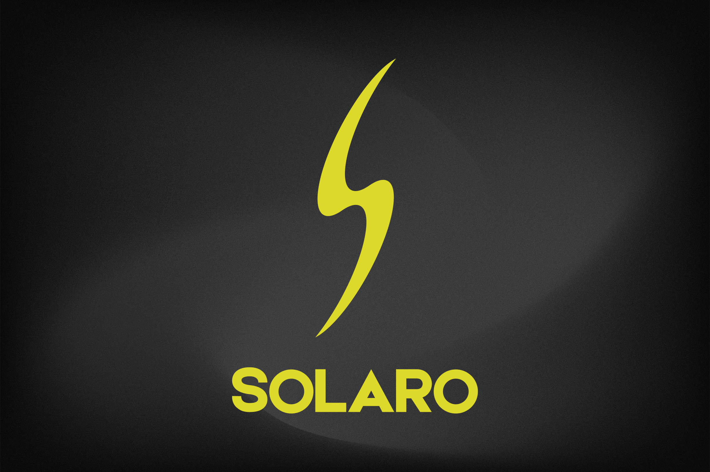
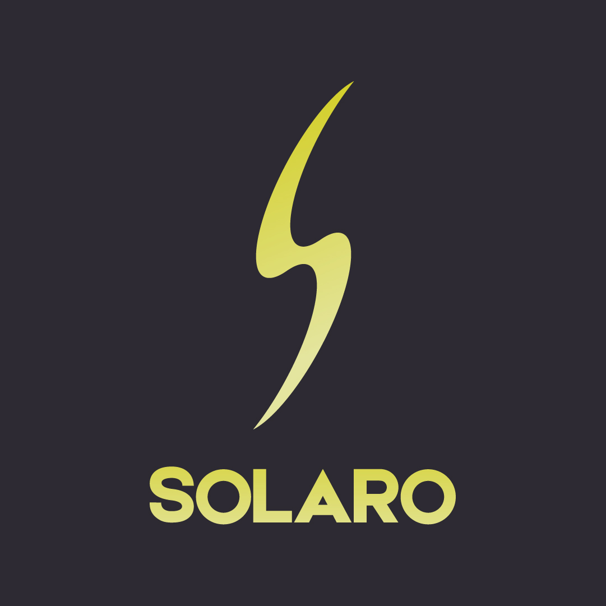
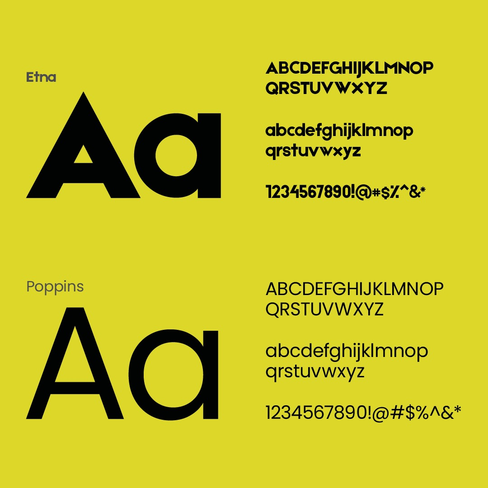
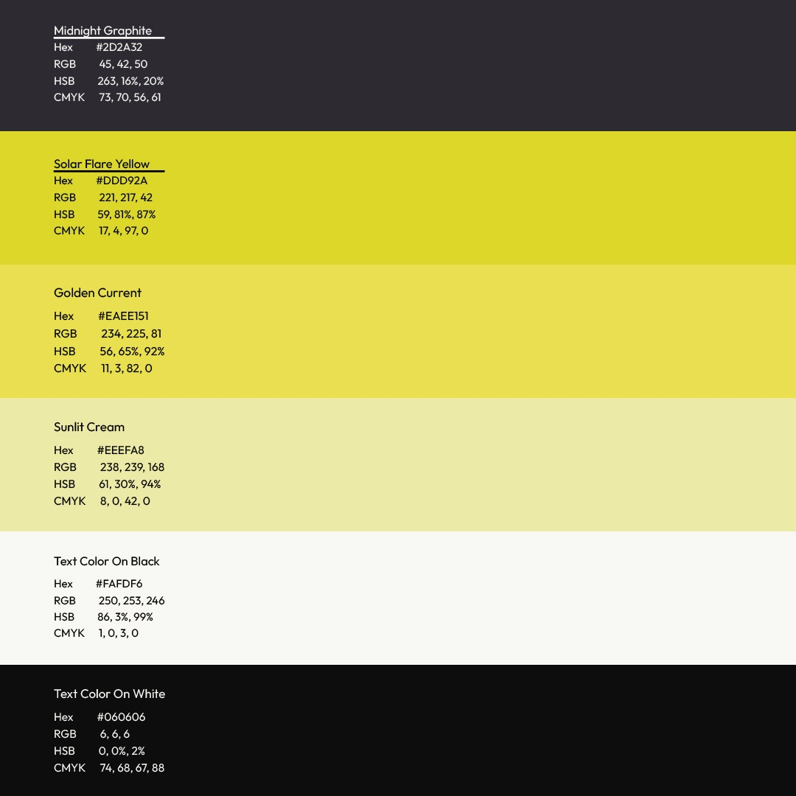
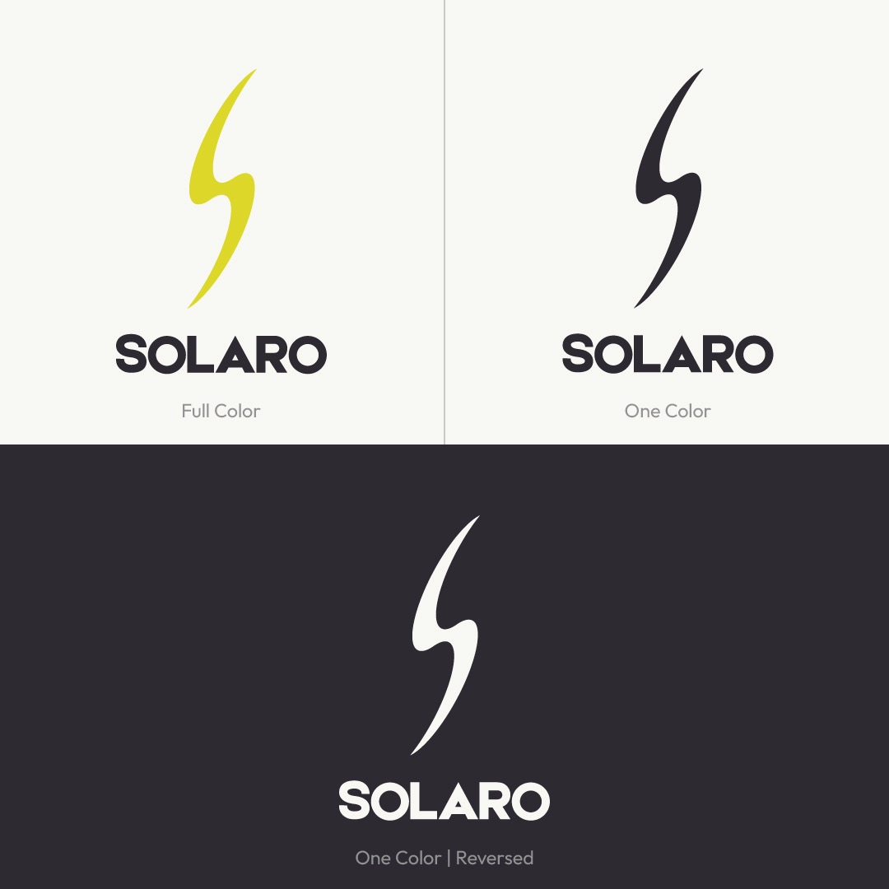
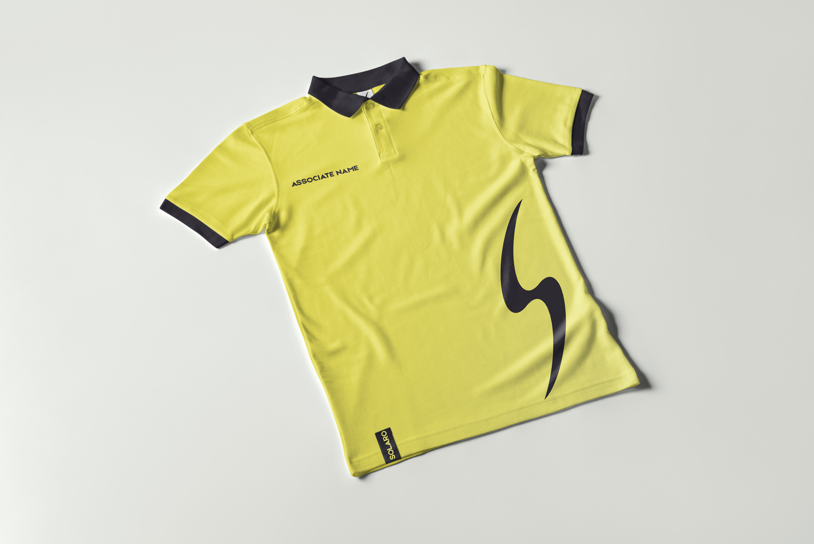
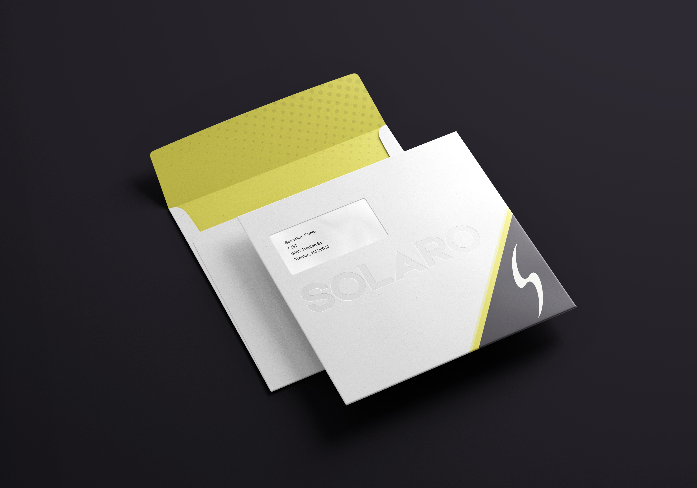
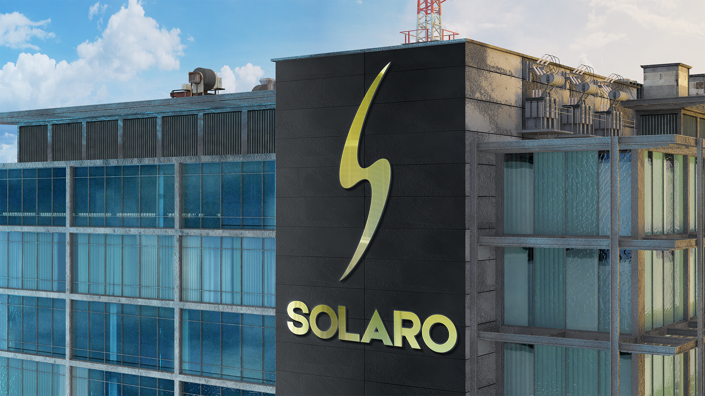
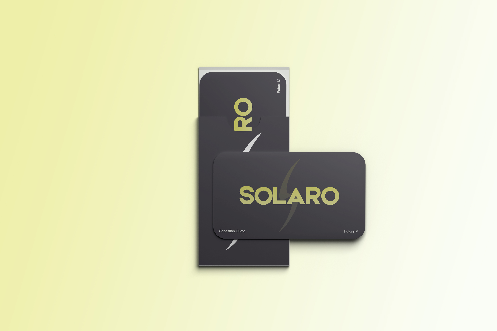

Solaro
Solaro is revolutionizing the automotive industry with groundbreaking solar-powered electric vehicles. They are not just building cars; they are building a sustainable future where driving is powered by the sun. Solaro invites drivers to explore innovative technology and discover the freedom of never having to plug in.
The brief demanded creating the total branding package. This required crafting an appropriate brand name, engineering a consistent visual identity system, and designing a striking, iconic logo mark that captures both celestial solar power and clean kinetic speed.



Monogram Anatomy & System Specs
The Solaro emblem merges aerodynamic velocity with solar geometric radiation. Built on an intricate grid of tangential arcs and acute lightning facets, the mark retains immediate silhouette recognition from roadside billboards down to digital dashboard clusters.
Rigorous reproduction standards govern full color, one color, and reversed treatments across high-contrast dark and light substrates, guaranteeing flawless fidelity across every industrial manufacturing application.



Architectural Scale & Lifestyle Touchpoints
From the glass and steel architecture of Solaro headquarters to tactile vehicle ownership artefacts, the identity establishes a commanding luxury presence. Minimalist NFC keycards replace traditional keys with effortless digital elegance, while bespoke celebratory gifts commemorate milestone vehicle deliveries.


The Solaro visual language balances advanced solar engineering with timeless automotive prestige. The lightning solar motif conveys endless clean energy, unconstrained mobility, and technological optimism.
By pairing intense Solar Flare Yellow with deep Midnight Graphite and architectural typography, the brand stands apart from generic electric vehicle tropes, establishing an iconic aesthetic that leads the post-fossil era.
From the aerodynamic curvature of the chassis to the physical touch of the smart keycard, Solaro turns every journey into an inspiring celebration of sunlight and speed.